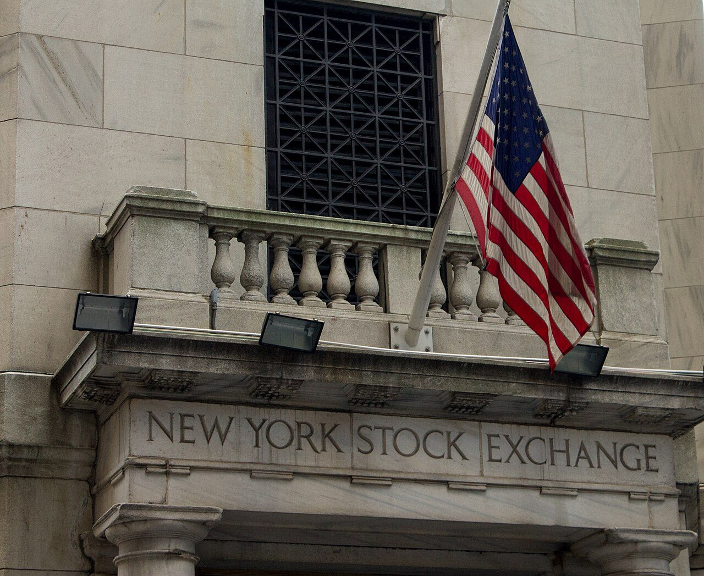
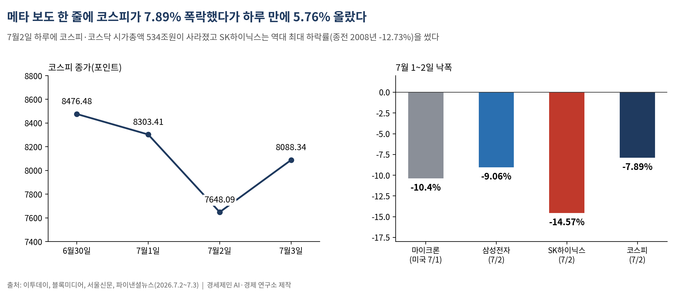
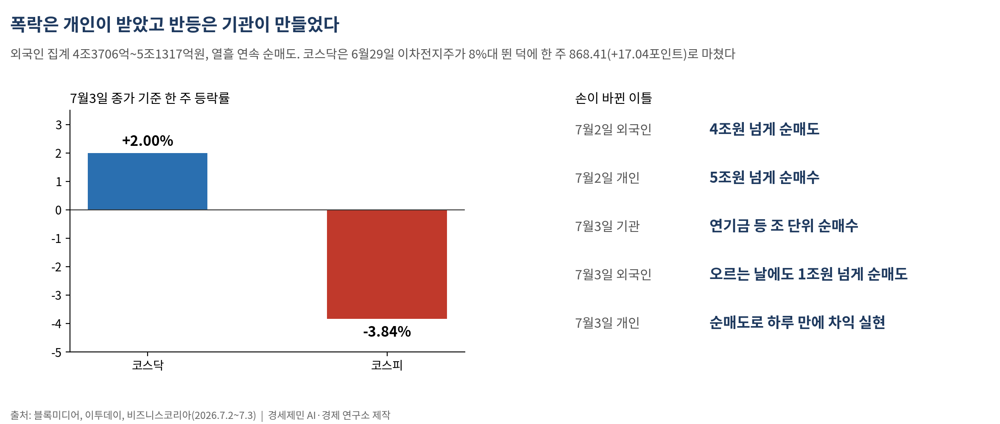
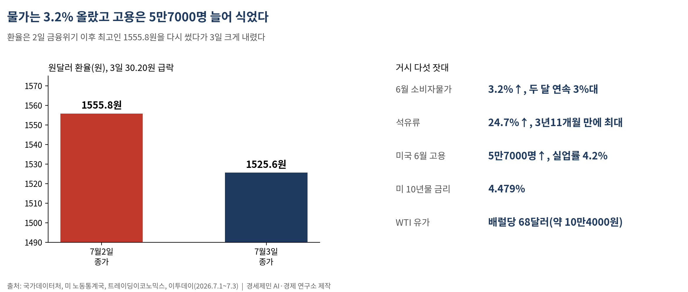
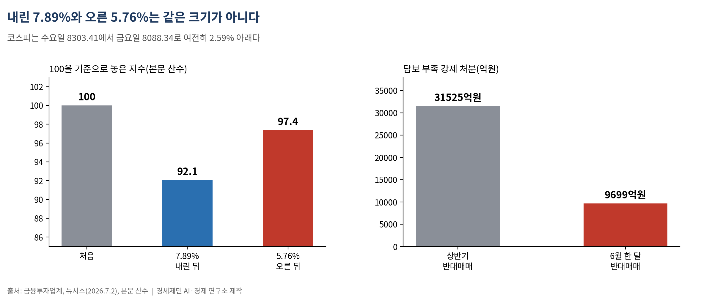
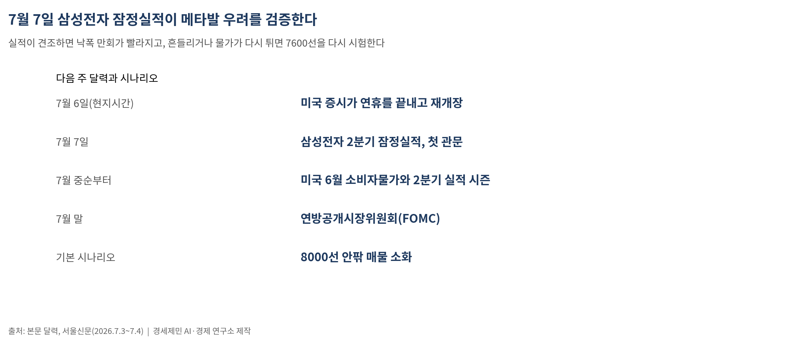

[주식공부] 메타 한마디에 코스피 7.89% 폭락, 하루 만에 5.76% 반등…7일 삼성전자 실적이 가른다
AI경세제민=김갑봉 기자 | 한 주 3.84% 내린 8088.34 마감, 코스닥은 2.00% 역주행…내린 7.89%와 오른 5.76%는 같은 크기가 아니다

(데이터 기준시점: 2026년 7월 3일 종가)
지난주 코스피는 322.87포인트(3.84%) 내린 8088.34에 마감했다. 6월30일 8476.48로 상반기 상승률 101.14%라는 역대 최고 기록을 닫은 시장이, 이틀 뒤 하루 7.89% 폭락과 하루 5.76% 반등을 연달아 겪었다.
7월2일 하루에만 코스피·코스닥 시가총액 534조원이 사라졌다(이투데이). SK하이닉스는 14.57% 떨어져 역대 최대 하락률(종전 2008년 -12.73%)을 썼다. 다음 날 지수는 440.25포인트(5.76%) 올라 8000선을 되찾았다. 폭락과 반등 사이에 있었던 것은 미국 빅테크 메타의 말 한마디였다.
메타의 한마디가 반도체 이야기를 뒤집었다

메타가 인공지능(AI) 데이터센터에서 남는 그래픽처리장치(GPU·AI 계산용 반도체)를 외부에 빌려주는 클라우드 사업을 검토한다는 보도가 1일(현지시간) 나왔다(서울신문). 'AI 칩이 부족하다'던 이야기가 '되팔 만큼 남는다'는 신호로 바뀌자 뉴욕증시에서 마이크론이 10.4% 폭락했다(파이낸셜뉴스).
2일 코스피는 655.32포인트(7.89%) 내린 7648.09에 마감했다. 삼성전자는 9.06% 내린 28만6000원으로 '30만전자'를 반납했고, 양 시장에 매도 사이드카가 걸렸다. 다만 실제 수요가 줄었다는 증거는 아직 없다.
폭락은 개인이 받았고, 반등은 기관이 만들었다

폭락한 2일 외국인은 4조원 넘게 팔았고(블록미디어·이투데이 집계 4조3706억~5조1317억원) 열흘 연속 순매도를 이어갔다. 그 물량을 개인이 5조원 넘게 받아냈다. 반등한 3일에는 손이 바뀌었다. 연기금 등 기관이 조 단위 순매수로 지수를 끌어올렸고, 외국인은 오르는 날에도 1조원 넘게 팔았다. 개인은 순매도로 하루 만에 차익을 챙겼다(비즈니스코리아·블록미디어).
코스닥은 다른 길을 갔다. 6월29일 이차전지주 반등에 8%대 뛴 덕에 한 주 전체로는 17.04포인트(2.00%) 오른 868.41로 마쳤다. 반도체에 쏠린 코스피가 흔들릴 때 돈은 소외된 업종으로 옮겨 다녔다.
물가 3.2%와 고용 5만7000명 — 거시 다섯 잣대

물가부터 심상찮다. 6월 소비자물가는 3.2% 올라 두 달 연속 3%대를 썼고, 석유류가 24.7% 뛰어 3년11개월 만에 최대폭이었다(국가데이터처, 7월2일). 미국 고용은 반대로 식었다. 6월 비농업 고용은 5만7000명 늘어 예상을 크게 밑돌았고 실업률은 4.2%였다(미 노동통계국). 미 10년물 국채금리는 고용 발표 뒤 4.479%로 물러섰다. 서부텍사스산 원유는 배럴당 68달러(약 10만4000원)로 내렸다(트레이딩이코노믹스, 7월1일). 원달러 환율은 2일 1555.8원으로 금융위기 이후 최고를 다시 썼다가, 3일 30.20원 급락한 1525.60원에 마쳤다(이투데이).
미국 증시는 2일 다우만 사상 최고치(52545.42)를 썼고 나스닥은 1.30% 내렸다. 반도체에서 빠진 돈은 소프트웨어로 옮겨 갔다. 상하이종합은 4100선(1일 4112)을 지켰다.
내린 7.89%와 오른 5.76%는 같은 크기가 아니다

100이 7.89% 내리면 92.1이 되고, 92.1에서 5.76% 오르면 97.4다. 코스피도 수요일 8303.41에서 금요일 8088.34로 여전히 2.59% 아래다. 내린 비율만큼 올라서는 본전이 안 되고, 반토막이 나면 100%를 올라야 제자리다.
이 산수를 더 크게 겪는 이들이 있다. 빚을 내 투자하거나 지수 등락의 두 배를 추종하는 레버리지 상장지수펀드(ETF)를 든 투자자다. 상반기 코스피가 두 배로 뛰는 동안 담보 부족으로 강제 처분당한 반대매매는 3조1525억원, 6월 한 달에만 9699억원이었다(금융투자업계·뉴시스). 지수가 두 배 오른 시장과 3조원을 강제 청산당한 개미는 같은 반년의 숫자다.
다음 주, 7일 삼성전자 잠정실적이 우려를 검증한다

다음 주 달력은 셋이다. 6일(현지시간) 미국 증시가 연휴를 끝내고 다시 열린다. 7일에는 삼성전자가 2분기 잠정실적을 낸다. 메타발 '수요 둔화' 우려가 숫자로 확인될지, 기우로 판명날지 가르는 첫 관문이다. 중순부터는 미국 6월 소비자물가와 2분기 실적 시즌, 7월 말 연방공개시장위원회(FOMC)가 이어진다.
기본 시나리오는 8000선 안팎의 매물 소화다. 삼성전자 실적이 견조하면 낙폭 만회가 빨라지고(상향), 실적이 흔들리거나 물가가 다시 튀면 7600선을 다시 시험한다(하향). 폭락 다음 날의 반등에 안도하는 일과, 그 반등에도 외국인이 열하루째 팔고 있다는 수급표를 읽는 일은 다른 자리에서 시작한다.
─────────────────────
※ 이 기사는 인공지능 프로그램 클로드 파블 5(Claude Fable 5)를 활용해 작성했다.
참고문헌
· "메타發 쇼크…코스피, 7%대 급락 '반도체 투톱' 역대급 폭락[종합]", 이투데이, 2026.7.2., https://www.etoday.co.kr/news/view/2599742
· "[마감시황] 코스피, 7%대 급락에 7600선 후퇴…SK하이닉스 14% 급락", 블록미디어, 2026.7.2., https://www.blockmedia.co.kr/archives/1112590
· "[퇴근길시황] 코스피, V자 반등하며 8000선 탈환⋯비트코인도 6만1천달러 회복", 블록미디어, 2026.7.3., https://www.blockmedia.co.kr/archives/1113087
· "[마감 시황] 코스피, 기관 '폭풍 매수' 속 반도체 쌍두마차 급등 8000선 회복…원·달러 환율 30원 이상 급락", 비즈니스코리아, 2026.7.3., https://www.businesskorea.co.kr/news/articleView.html?idxno=272466
· ""좋다 말았네"…8600까지 오르던 코스피, 8400선으로 종료 [fn마감시황]", 파이낸셜뉴스, 2026.6.30., https://www.fnnews.com/news/202606301605362338
· "코스피 2배 뛰었는데…'3조 강제청산 당했다' 빚투개미 '피눈물'", 뉴시스(파이낸셜뉴스 게재), 2026.7.2., https://www.fnnews.com/news/202607020701038749
· "[뉴욕증시] 다우지수, 막판 약세 전환…마이크론, 10.4% 급락", 파이낸셜뉴스, 2026.7.2., https://www.fnnews.com/news/202607020515299188
· "6월 소비자물가 3.2%↑…석유류 급등에 30개월 만에 최대폭 상승 [상보]", 이투데이, 2026.7.2., https://www.etoday.co.kr/news/view/2599405
· "메타 '남는 GPU 빌려드려요'… 삼전닉스 9%·14% 폭락 쇼크", 서울신문, 2026.7.3., https://www.seoul.co.kr/news/economy/securities/2026/07/03/20260703029002
· "역대 가장 뜨거웠던 상반기…코스피 4200→8400 수직 상승", 뉴시스, 2026.6.30., https://www.newsis.com/view/NISX20260630_0003690120
사진 출처
· [대표사진] Balon Greyjoy, "New York Stock Exchange Entrance.jpg", 위키미디어 공용, CC0, https://commons.wikimedia.org/wiki/File:New_York_Stock_Exchange_Entrance.jpg
※ 이 기사는 인공지능을 활용해 작성했습니다.
관련기사
- [주식공부] 89조 사상 최대 실적에도 코스피 한 주 7.57% 폭락…셀온이 삼킨 반도체
- [주식공부] 이틀 만에 천국과 지옥…마이크론에 5.42% 오른 코스피, 애플에 5.81% 빠졌다
- 코스피, 사상 최고가 주에 서킷브레이커 급락…다음 주 삼성 실적이 분기점
- [주식공부] 25년 7개월 지킨 왕좌, 하루 만에 주인이 바뀌었다 — 하이닉스가 삼성을 제친 날
저작권자 © AI경세제민 무단전재 및 재배포, AI학습 및 활용 금지